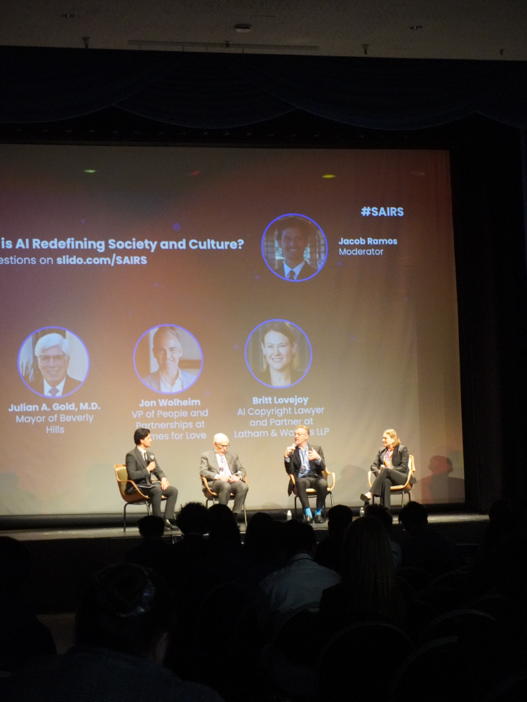

Bruin AI
Problem
UCLA lacked a dedicated AI community, leaving students without structured opportunities to learn and engage with artificial intelligence technologies.
Solution
Founded Bruin AI, a comprehensive platform offering education, project experience, and industry networking opportunities to UCLA students.
Impact
- Grew to 65+ active members and 1500 Substack subscribers
- Partnerships/Projects (Cisco, Humane, UpSkill, Actuals, GumGum)
- Hosted a 400+ person AI conference
- Established on-campus lectures and workshops on generative AI
Akatosh Travel App
Problem
Travelers rely heavily on impersonal reviews, missing authentic recommendations from trusted friends and real travelers.
Solution
Developed Akatosh, a social travel platform connecting friends through interactive mapping and AI-powered recommendations.
Impact
- Won 1st Place at Bruin Entrepreneurs pitch competition
- Created prototype in Figma
- Validated concept through user testing and feedback